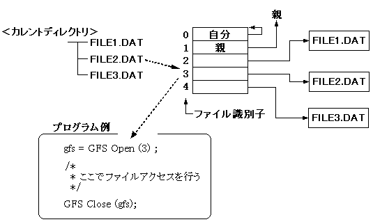
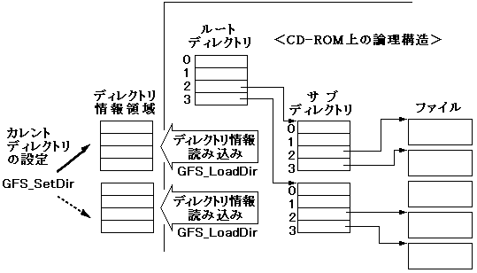

★PROGRAMMER'S GUIDE
★ファイルシステムライブラリ
★PROGRAMMER'S GUIDE
★ファイルシステムライブラリ
#define OPEN_MAX 20 /* 同時に開くファイルの最大数 */ #define MAX_DIR 10 /* ディレクトリ情報の最大数 */Uint32 work[GFS_WORK_SIZE(OPEN_MAX)/4]; /* ライブラリ作業領域 */ GfsDirTbl dirtbl; /* ディレクトリ情報管理構造体 */ GfsDirId dir[MAX_DIR]; /* ディレクトリ情報格納領域 */
GFS_DIRTBL_TYPE(&dirtbl) = GFS_DIR_ID; /* ディレクトリ情報格納領域の型 */ GFS_DIRTBL_NDIR(&dirtbl) = MAX_DIR; /* ディレクトリ情報格納領域の */ /* 最大要素数 */ GFS_DIRTBL_DIRID(&dirtbl) = dir; /* ディレクトリ情報格納領域の */ /* アドレス */ GFS_Init(OPEN_MAX, work, &dirtbl);
図3.1 ファイル識別子によるアクセス

図3.2 ディレクトリ情報の設定

#define MAX_DIR 10 /* ディレクトリ情報の最大数 */ GfsDirTbl dirtbl; /* ディレクトリ情報格納領域 */ GfsDirId dirid[MAX_DIR]; /* ディレクトリ情報格納領域 */ Sint32 dir_fid; /* ディレクトリファイルの識別子が入る */ Sint32 fid; /* アクセスするファイルの識別子が入る */ GfsHn gfs; /* アクセスするファイルのファイルハンドル */ GFS_DIRTBL_TYPE (&dirtbl) = GFS_DIR_ID; GFS_DIRTBL_NDIR (&dirtbl) = MAX_DIR; GFS_DIRTBL_DIRID(&dirtbl) = dirid; GFS_LoadDir(dir_fid, &dirtbl); /* ディレクトリ情報の読み込み */ GFS_SetDir(&dirtbl); /* カレントディレクトリ設定 */ /* fidにアクセスするファイルの識別子を設定 */ gfs = GFS_Open(fid); /* * ここでファイルアクセスを行う */ GFS_Close(gfs);
#define MAX_DIR1 10 /* dir_fid1 のディレクトリ情報の最大数 */ #define MAX_DIR2 10 /* dir_fid2 のディレクトリ情報の最大数 */ GfsDirTbl curdir; /* この時点でのカレントディレクトリ */ GfsDirTbl dirtbl1, dirtbl2; /* ディレクトリ情報管理領域 */ GfsDirId dirid1[MAX_DIR1]; /* ディレクトリ情報格納領域 */ GfsDirId dirid2[MAX_DIR2]; /* ディレクトリ情報格納領域 */ Sint32 dir_fid1, dir_fid2; /* ディレクトリファイルの識別子が入る */ Sint32 fid1, fid2; /* アクセスするファイルの識別子が入る */ GfsHn gfs1, gfs2; /* アクセスするファイルのファイルハンドル */ /* カレントディレクトリの dir_fid1 のディレクトリ情報を読み込む */ GFS_DIRTBL_TYPE (&dirtbl1) = GFS_DIR_ID; GFS_DIRTBL_NDIR (&dirtbl1) = MAX_DIR; GFS_DIRTBL_DIRID(&dirtbl1) = dirid1; GFS_LoadDir(dir_fid1, &dirtbl1); /* カレントディレクトリの dir_fid2 のディレクトリ情報を読み込む */ GFS_DIRTBL_TYPE (&dirtbl2) = GFS_DIR_ID; GFS_DIRTBL_NDIR (&dirtbl2) = MAX_DIR; GFS_DIRTBL_DIRID(&dirtbl2) = dirid2; GFS_LoadDir(dir_fid2, &dirtbl2); /* ディレクトリdir_fid1のファイル、fid1をオープン */ GFS_SetDir (&dirtbl1); gfs1 = GFS_Open(fid1); /* ディレクトリdir_fid2のファイル、fid2をオープン */ GFS_SetDir (&dirtbl2); gfs2 = GFS_Open(fid2); /* * ここでファイルアクセスを行う */ GFS_Close(gfs1); GFS_Close(gfs2);
［例］ /* ファイル名で指定されたファイルを開く */
GfsHn OpenByName(Sint8 *fname)
{
Sint32 fid = GFS_NameToId(fname);
if (fid ＜ 0) {
return NULL;
}
return GFS_Open(fid);
}
長所 | 短所 |
|---|---|
・ホストメモリの使用量が少ない。 | ・異なるディレクトリのファイルをアクセ |
・アプリケーションが使用できるCDバッ | |
・ファイル名を使用できません。 |
★PROGRAMMER'S GUIDE
★ファイルシステムライブラリ